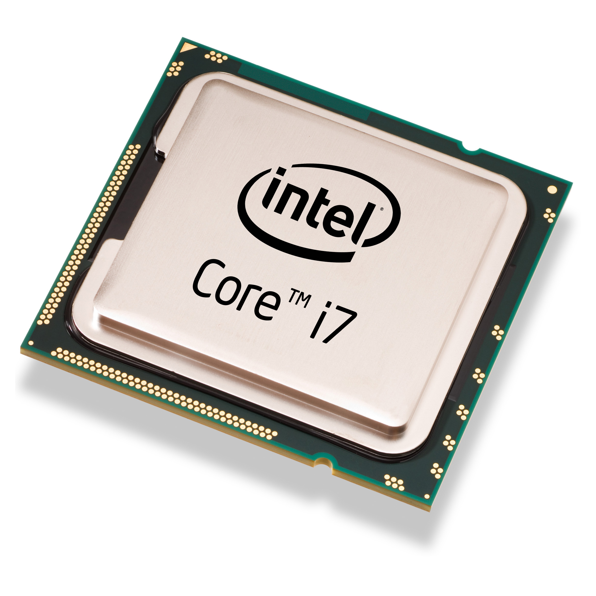
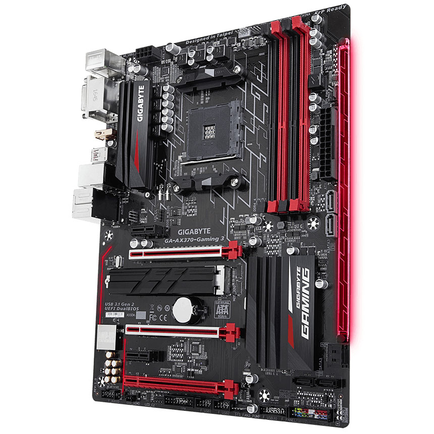
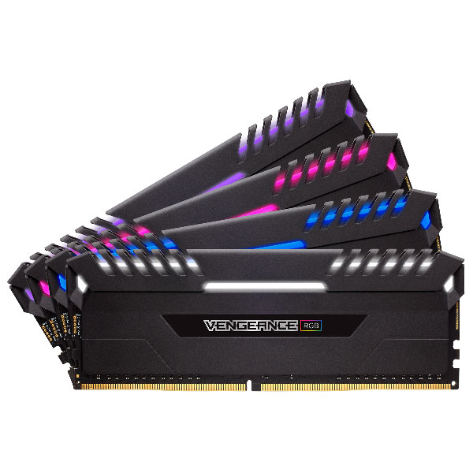
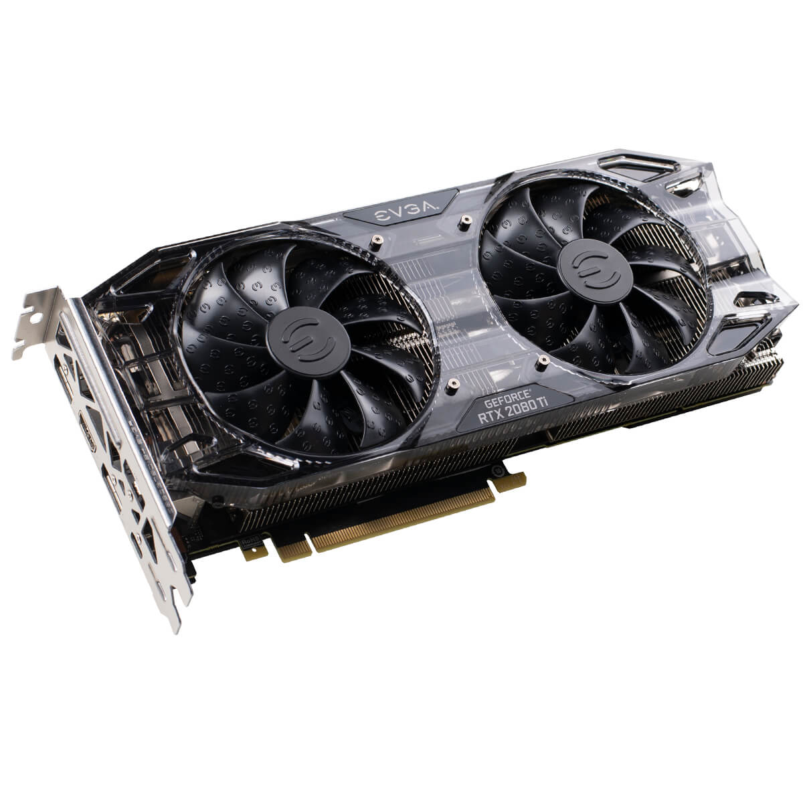
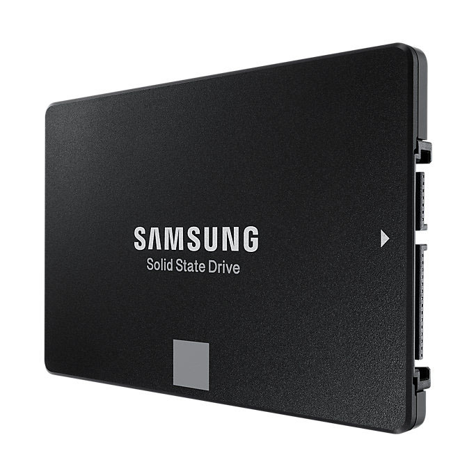
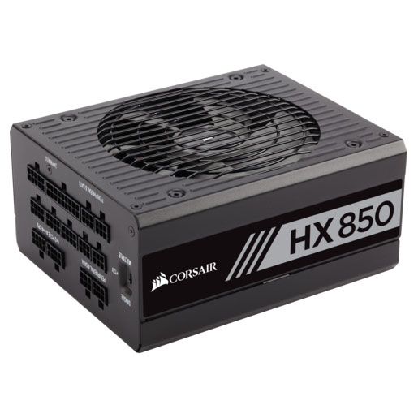
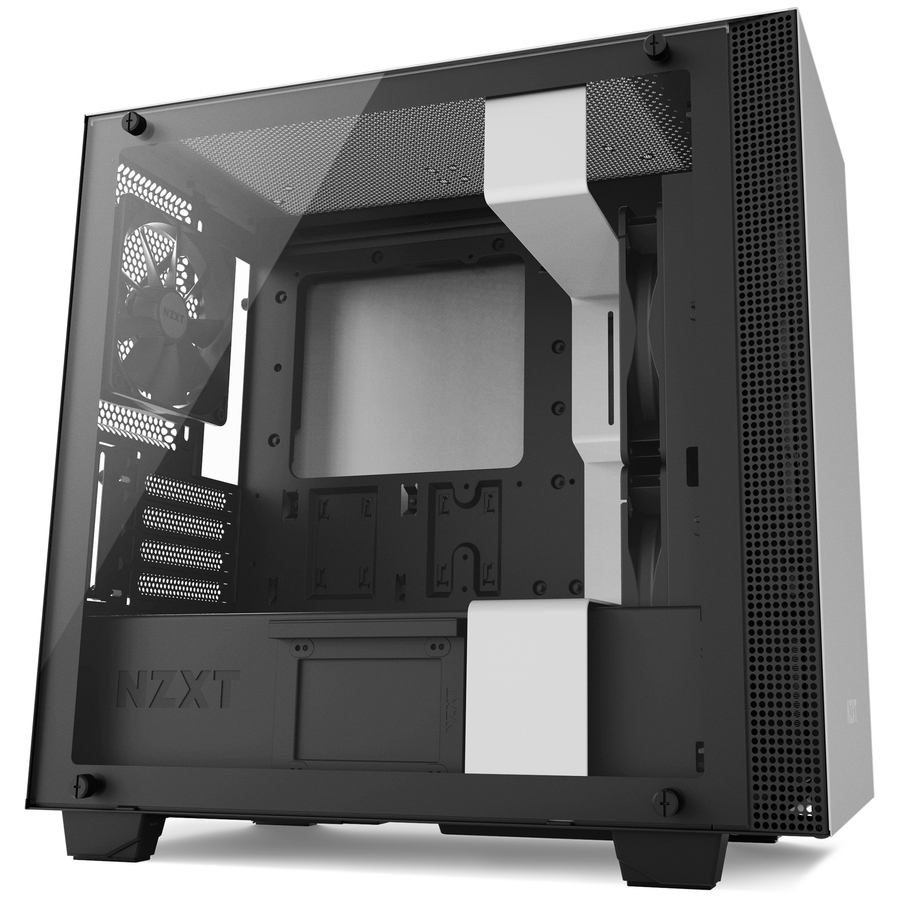

Ok so here is where things really get interesting, what do I actually need to do this? Maybe you are
thinking to yourself “I have no idea where to find a Flux Capacitor”, worry not! We will break down all
the components and how to choose the right one for the job (time machine anyone?).

CPU (Central Processing Unit)
Here is where any new build should start, choosing a CPU. As far as CPUs are concerned there are really
two main options team blue (Intel) or team Red (AMD). These two companies own the CPU market and both
have their place. How to pick? Well do you prefer the colour red or blue? Just kidding there is more to
it than that! Generally speaking AMD can be a little cheaper where as Intel has been in the market
since almost the beginning and is very well regarded as king of the CPU. Regardless of who you choose
they will have an offering that accommodates what you are trying to accomplish.

Motherboard
Now that you have chosen a CPU we move on to the motherboard. The motherboard is the center piece that
holds all the other components and allows you to plug in things like usb, audio, ethernet, etc.
Choosing a specific processor narrows down your search when it comes down to the motherboard. You will
need to match the CPU socket to the correct motherboard. Once you know the socket type you start to
look at specific features you want. Some of these features to consider are: form factor, memory slots,
does it come with wi-fi, and if you have an unlocked CPU does it allow you to overclock.

Memory (RAM)
Choosing memory is pretty straight forward. First make sure you get proper type, now days DDR4 is the
standard and will be what you need if buying new parts. The next step is to figure out how much memory
you would like, I would recommend a minimum of 8GB for the basic user, 16GB+ for the gamer and the
professional. It is also important to keep in mind how many RAM slots are on your motherboard, if it
only offers two and you want 32GB you will need to purchase 2 times 16GB. The last thing to look at is
the rated speed of the RAM, a good rule of thumb is to match the RAM speed recommended by your CPU, a
common speed is 2666MHz.

GPU (Graphical Processing Unit)
The GPU, also know as the graphics card, can be the most expensive part of a build. There is a huge
market for graphics cards with countless options. With that being said there are really only two
architecture manufacturer to consider for the general consumer: Nvidia or AMD. Similarly to CPU’s AMD
tends to be the less expensive option. Another thing to keep in mind is that many processor can handle
light video rendering, this means that if the CPU offers this capability then a GPU is not always
required. Not adding a graphics card to a basic user build is a great way to save some money. The
gamers and the professional users should definitely not cheap out on this component. The price you pay
for a GPU often reflects exactly how many frames per second can be achieved while playing a 3D game.

Storage (Hard Drive)
Storage is simply how much “stuff” your computer can hold, this also includes your operating system.
There are two main hard drives on the market right now, spinning disk hard drives and Solid State
Drives (SSD). An SSD has no moving parts and are usually no bigger then 2.5in in width. The SSD is
generally a faster drive but can be a more expensive. A popular configuration is having a smaller SSD
to store the operating system and programs that are often used accompanied with a bigger Hard Disk
Drive to keep as storage(video files, games, photos, etc.).

Power Supply (PSU)
The power supply (PSU) is the part that takes electricity from your house and delivers it to all the
computers components. The number one most important thing when choosing a PSU is to make sure it has
enough “juice” to power everything, tools like this one can
be very useful. Once you know how many watts you need then the other things to consider are:
efficiency, form factor, modular or not, and how loud it is. Having a modular power supply means the
cables to the different components in your computer can be removed from the power supply, this is
desirable as there is no need to tuck away unused cables in the bottom of the case.

Computer Case
The computer case can be considered the “showpiece”, it can be a plain black case to a full window and
light show. Before getting carried away with how many glass panels and LED strips you want you need to
consider the size. Based on the motherboard you chose you will need to get a case that fits. ATX (mid
tower) is probably the most common setup but small and large towers also exist. Other added features to
look for are: how many fans does it support, how many drives does it support, how big of a radiator can
be mounted and in what position, does it have a PSU shroud, glass side panels, the list goes on. I
recommend finding a style you like then look for a case in that style that offers the features you are
looking for.
Our parts are picked, ordered and received, this can only mean one thing, building time!